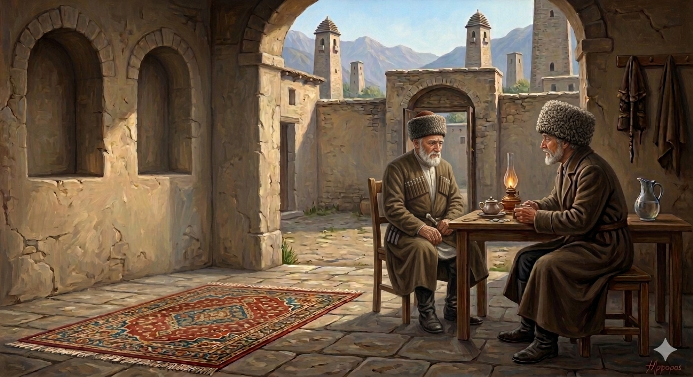

И.А. Дахкильгов. Хьехаме дувцарш - поучительные рассказы-притчи.
И.А. Дахкильгов. Хьехаме дувцарш - поучительные рассказы-притчи. Из ингушского фольклора.

Ӏа ца даьр хьа къонгаша дергдац
Цхьан даь кхийна дӀаотташ хиннав массехка воӀ. Цох чӀоагӀа бӀубенна лелаш хиннав из. Цу къонахчоа вовзаш а цунца гӀулакх доагӀаш а хиннав цаӀ. Ший къонгех доккхал а деш, аьннад йоах, цу къонахчо ший доттагӀчунга: - Дукха ха йисаяц са къонгаша шоай даь-даь, вешта аьлча са даь, пхьа лаха. Цхьа ши шу мара ха йисаяц, тӀаккха ховргда-кха. Цу доккхача къамаьлага ладогӀаш ваьгӀача доттагӀчо цавашшаш аьннад йоах: - ТӀаккха а ха хӀама дац хьона. Цар пхьа лехарах дог дила мара дезац хьа. Ӏа хьай даь чӀир нийсъяь йоацача мича-а хьа къонгаша нийсаергья хьона шоай даь-даь чӀир! Дог дила мара дезац хьа. Духьала ала хӀама доацаш висав, йоах, из къонах.
РУССКИЙ
Твои сыновья не сделают того, что ты не сделал
У некоего мужчины подрастало несколько сыновей, чем он очень гордился. У этого мужчины был друг, с которым он всегда делился своими мыслями и делами. Гордясь своими сыновьями, он сказал этому другу: - Не много времени осталось, чтобы мои сыновья отомстили за своего деда, моего отца. Пройдет года два, и нашим кровникам не поздоровится. Друг слушал все эти кичливые слова, а потом пренебрежительно сказал: - Ничего подобного не произойдет. Оставь надежду на то, что они совершат кровное возмездие. Как они могут подобное сделать, когда их отец не отомстил за своего отца. А ты думаешь, что они будут мстить за деда. Нечего было ответить тому мужчине, и он промолчал.
ENGLISH
Your sons will not do what you failed to do
A man had several sons, and he was very proud of them as they grew up. He had a friend with whom he always shared his thoughts and deeds. Proud of his sons, he told his friend, 'There isn't much time left before my sons take revenge for their grandfather, my father. In a year or two, our blood enemies will be in for a rough time." The friend listened to all these boastful words and then dismissed them. "Nothing of the sort will happen. Give up any hope that they will exact blood vengeance. How can they do such a thing when their own father did not avenge his father? And yet you think they will avenge their grandfather." The man had no reply and remained silent.
НОХЧИЙН
Ахь ца динарг хьан кӀенташа дийр дац
Цхьана ден кхиъна дӀахӀуттуш хилла массех воӀ. Цунах чӀогӀа дозалла деш лелаш хилла иза. Цу къонахчун вевзаш а цуьнца гӀуллакх догӀуш а хилла цхьаъ. Шен кӀентех дозал а деш, аьлла бох, цу къонахчо шен доттагӀчуьнга: - Дукха хан йисна йац сан кӀенташа шай деден, вуьшта аьлча сан ден, пхьа лаха. Цхьа ши шо бен хан йисна йац, тӀаккха хуур ду-кх. Цу доккхачу къамеле ладугӀуш вехачу доттагӀчо ца вешаш аьлла бох: - ТӀаккха а хаа хӀума дац хьуна. Цара пхьа лехарх дог дилла бен дезац хьан. Ахь хьайн ден чӀир нисйина йоцучохь мича-а хьан кӀенташа нисйира йу хьуна шай ден-ден чӀир! Дог дилла бен дезац хьан. Дуьхьал ала хӀума доцуш висна, бах, и къонах.
ПОГОВОРКИ
ВоккхагӀчунга ийс пхьа ба. За старшим (как ответчиком за деяния младших) числится девять случаев кровной мести. The elder (as the one held responsible for the actions of the younger ones) is credited with nine cases of blood feuds. Воккхачуьнгахь исс пхьа бу.Гурахьарча саьл карара лекъ тол. Лучше перепелка в руках, чем надежда поймать осенью оленя. A quail in the hand is better than the hope of catching a deer in the fall. Гурахьаьрча сел карара лекъ тоьлу.Зовза саг жӀалена а дика вовз. Трусливого собака сразу признает. A cowardly dog is recognized at once. Зовза стаг жӀаьлина а дика воьвза.Зовзачун кий наха йихьай. Папаху срывают (и уносят) только с трусливого. A papakha is torn off (and carried away) only from a coward. Зовзачун куй наха баьхьна.Кхоанарга даьккхар ломмарга даьннад, ломмарга даьннар дайна дӀадаьннад. Отложенное на завтра осталось на послезавтра, оставленное на послезавтра вообще пропало. What is put off until tomorrow remains until the day after tomorrow; what is left for the day after tomorrow is lost altogether. Кханенга даьккхинарг ломанга даьлла, ломанга даьлларг дайна дӀадаьлла.Кхувр (пхьа лехар) кхийнав, удар (пхьа боаллар) вийнав. Стремившийся (свершить кровную месть) достиг своего, избегавшего (возмездия) убили. The one who sought (to carry out blood revenge) achieved his goal; the one who avoided (retribution) was killed. Кхуьург (пхьа леххарг) кхиъна, уьдург (пхьа боллург) вина.МоцагӀа яьхад: “Фаьлгаши гӀанаши дувцаш, со ма Ӏехаве”. Некогда говорили: “Не дури меня, рассказывая сны и сказки”. They used to say, “Don’t fool me by telling me dreams and fairy tales.” Мацах баьхна: «Туьйранаш гӀенаш дуьйцуш, со ма Ӏехаве».Сатийначох ма теша, сихачох ма кхера. Тихоне не верь и вспыльчивого не бойся. Don’t trust the quiet one, and don’t fear the hot-tempered one. Сатийначух ма теша, сихачух ма кхера.“Фунехк-минехк дергда аз!” – яхаш дукха Ӏийхачо цхьаккха а даьдац. Грозивший, что он сделает что-то страшное, необычное, - ничего не сделал. The one who threatened to do something terrible or unusual did nothing at all. «Хьенех-минех дийр ду ас!» – бохуш дукха Ӏийхинчо цхьа хӀума ца дина.Хала дар, аьле, хӀамах бӀу ма къожабе; атта дар, аьле, тесса ма дита. Не пасуй перед трудным, не оставляй на самотек кажущееся легким. Don’t shy away from what’s difficult; don’t let what seems easy slide. Хала дар, але, хӀуманах бӀо ма къажбе; атта дар, але, тесна ма дита.Хи божаш ца даьнна тата хи бежачул тӀехьагӀа даьннадац. Если не было шума при падении дерева, то его не было после падения. If there was no noise when the tree fell, then there was none after it fell. Дитт дужуш ца даьлла тата дитт доьжначул тӀаьхьа даьлла дац.Хьайга дулур нахага де ма ала. Не перекладывай на других то, что можешь сделать сам. Don’t pass on to others what you can do yourself. Хьайга далург нахе де ма ала.ЦӀенош далехьа карт оттаяьчо цӀенош дергда; карт оттаялехьа цӀенош де волавенначо цӀенош дергдац. Тот построит дом, кто вначале поставил забор; а кто же сразу начал строить дом без ограды, не построит его. The one who first put up a fence will build a house; but the one who started building a house right away without a fence will not build it. ЦӀенош дале керт хӀоттийначо цӀенош дийр ду; керт хӀоттайале цӀенош дан волавеллачо цӀенош дийр дац.